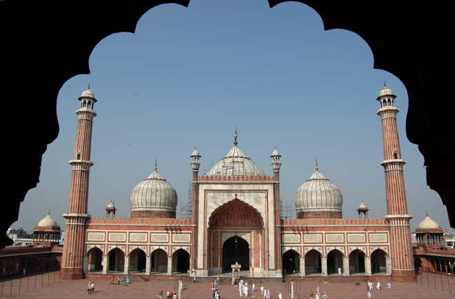
.
This striking mosque - the Jama Masjid - is the largest in India and the final architectural extravagance of Shah Jahan. Begun in 1644 the mosque wasn't completed until 1658. The mosque has three gateways, four towers and two minarets standing 40m high and is constructed of alternating vertical strips of red sandstone and white marble.
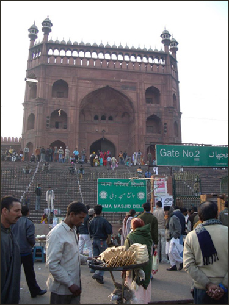
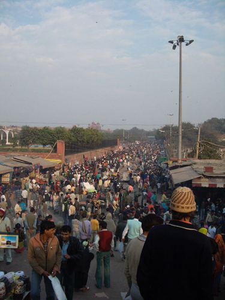
The area around the mosque was heaving with people, children playing football and stallholders selling merchandise. We particularly liked these big red bras for sale within striking distance of the conservative mosque ...
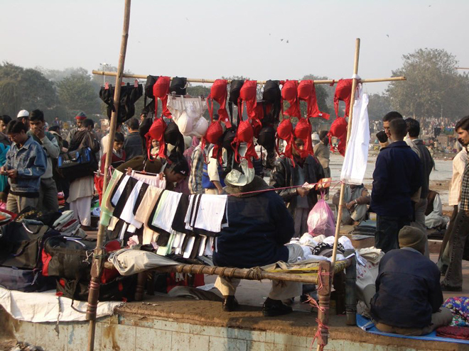
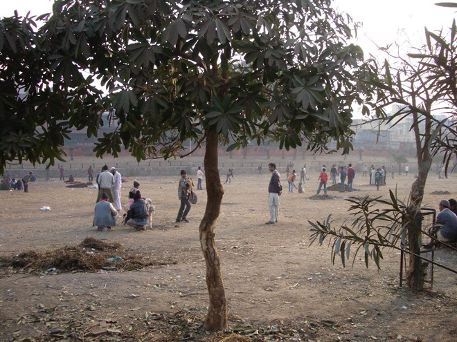
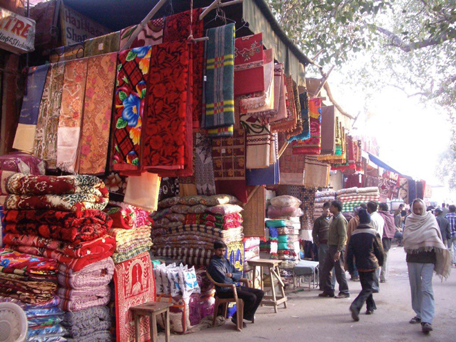
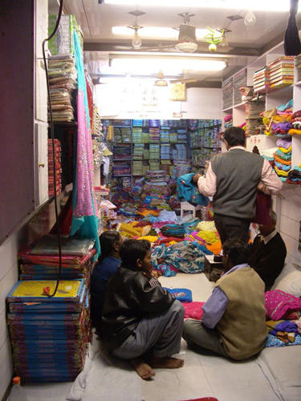
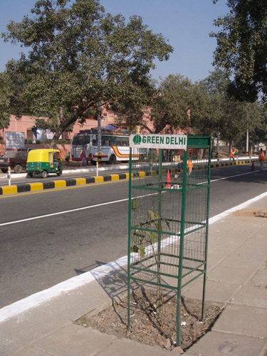
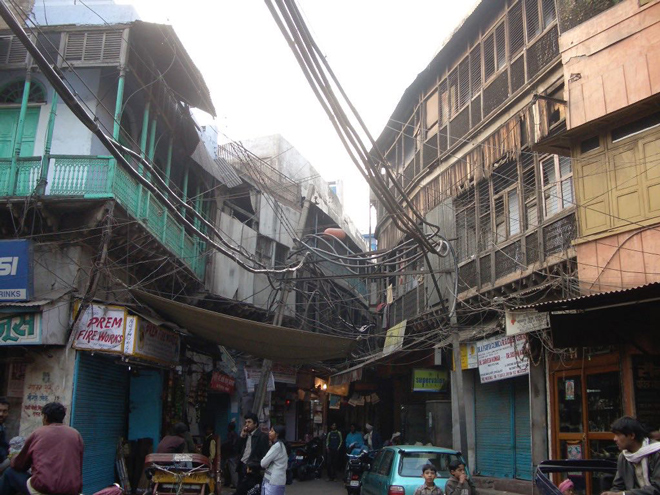
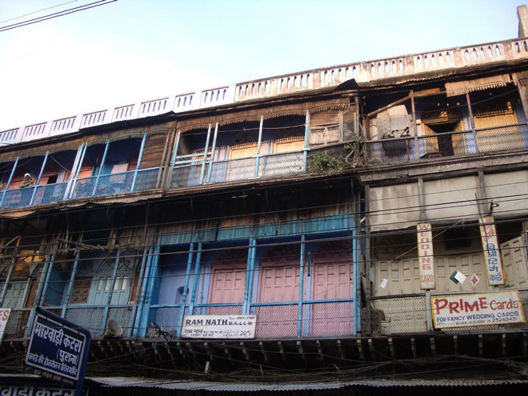
Gracefully appointed, with pillared verandahs and an avenue of palms, the Imperial Hotel is an eclectic Raj-era hotel build in 1931, and has hosted everyone from royalty to rock stars. Indeed, it's said that Gandhi, Jinnah, Nehru and Mountbatten met here to discuss the thorny matter of India's partition.
Beautifully refurbished, the property amalgamates various styles, from classic Victorian to colonial and Art Deco. It has two fabulous bars - at one of which we managed to sink £50 on four gins and tonics ...
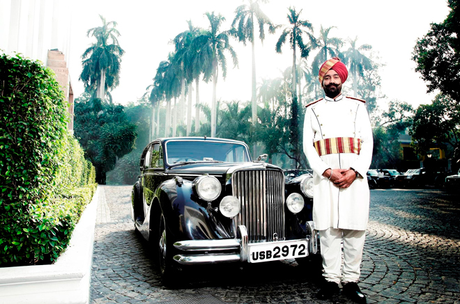
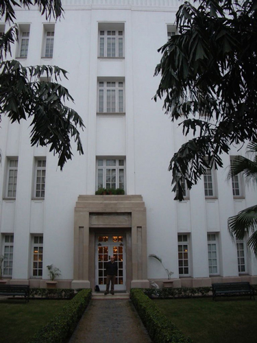
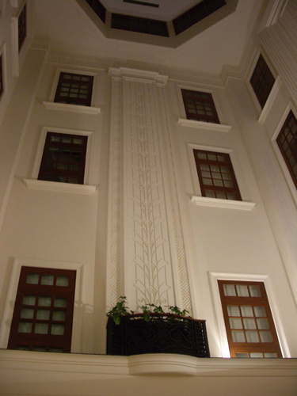
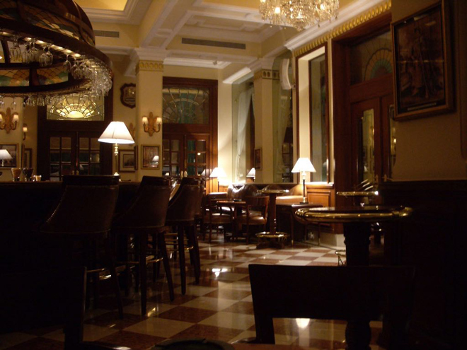